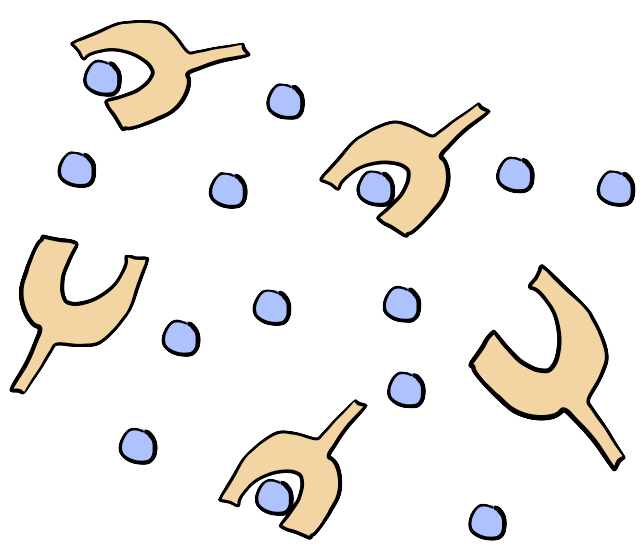

In his book What is Life?: Five Great Ideas in Biology, Paul Nurse posits that "Life as Chemistry," meaning that, in his words, "many of life's activities can be understood in terms of chemistry," is a central idea in biology. In order to understand the living world, and certainly to engineer it, then, we need a foundational understanding of the chemical principles driving life's activities. This course serves to lay the chemical groundwork for an aspiring bioengineer.